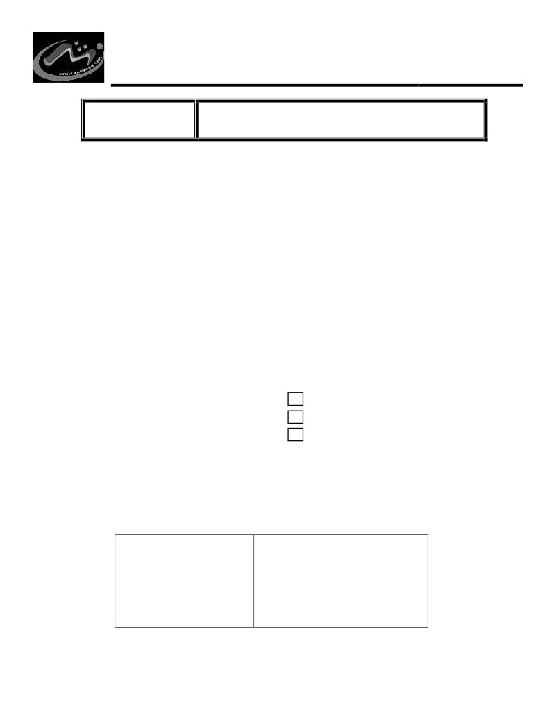

Jl. Cikutra No. 113 A
Bandung - 40124
STMIK BANDUNG
(022) 7207777
SEKOLAH TINGGI MANAJEMEN INFORMATIKA & KOMPUTER BANDUNG
F.AKA-03-07-11
FORM PENGAJUAN KERJA PRAKTEK
A. Pernyataan Mahasiswa
Saya yang bertandatangan dibawah ini:
NIM
: …………………………
Nama
: …………………………………………………………………………………
Jurusan : …………………………………………………………………………………
Dengan ini mengajukan untuk mengikuti matakuliah Kerja Praktek
pada tahun akademik
……………/……………. Semester ………………., dan telah memenuhi persyaratan.
Dosen Pembimbing (diisioleh petugas)
………………………………………………………..
B. Diisi Petugas
Pemeriksaan lampiran persyaratan
1. Transkip nilai
2. Bukti pembayaran Kerja Praktek
3. Proposal Kerja Praktek
Surat ini sah jika ditandatangani oleh semua yang tercantum dibawah ini. Surat ini sebagai bukti
bahwa mahasiswa tersebut diatas telah memenuhi syarat untuk melaksanakan Kerja Praktek.
Bandung, …………………………..
Disetujui oleh :
BAU
Ketua Jurusan SI / IF
……………………………
………………………………